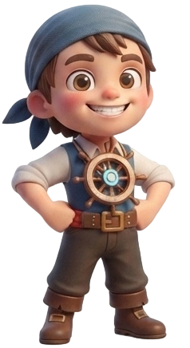
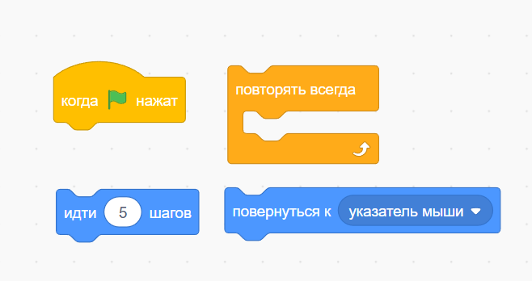
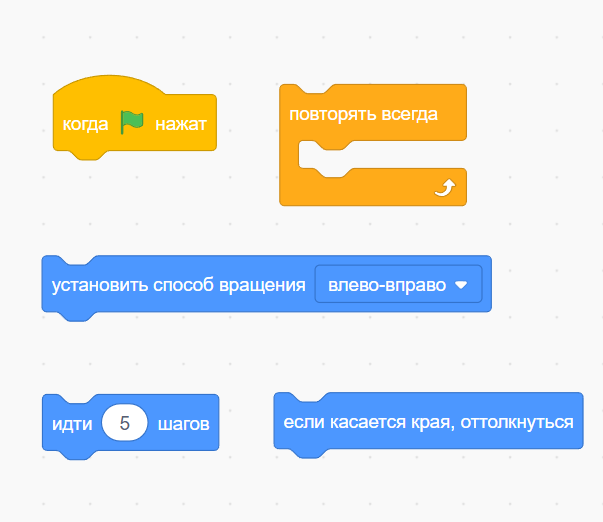

Что такое алгоритм?

Алгоритм — это последовательность команд, которые выполняются в определенном порядке, чтобы получить нужный результат.

Нам нужно:
- спустить шлюпку;
- доплыть до берега;
- найти пальму;
- раскопать сундук.


Программа — это алгоритм, написанный на языке, который понимает компьютер. В нашем случае — на языке цветных блоков Scratch.
Интерфейс scratch

- 1. палитра блоков — меню со всеми командами, разделенными по цветам.
- 2. область кода — место, где ты соединяешь блоки в алгоритм.
- 3. сцена — экран, на котором твой герой оживает.
- 4. спрайты — список всех персонажей твоего проекта.
- 5. фоны — настройки места действия (декорации).
Проект "Управляем кораблем"
Перейти в ScratchАлгоритм действий:
- Нажми кнопку "Открыть заготовку" и сделай Ремикс.
- Запускающая команда: Когда флажок нажат.
- Движение: Повернуться к указателю мыши + Идти 10 шагов.
- Управление: Помести блоки внутрь цикла Повторять всегда.
- Эксперимент: Измени число шагов (скорость).

«Каждая великая идея начинается с наблюдения.
Если вы хотите однажды создать Город будущего, сначала научитесь замечать удивительные вещи вокруг себя.
Ваше первое исследование — жизнь под водой.»
Миссия №1
Изучите жителей лагуны. Попробуйте понять, как они двигаются и защищаются. Возможно, однажды именно природа подскажет вам идеи для технологий будущего.
Изучите жителей лагуны. Попробуйте понять, как они двигаются и защищаются. Возможно, однажды именно природа подскажет вам идеи для технологий будущего.
✨
Важно
Чтобы твоя работа не пропала, не забудь нажать кнопку «Сохранить сейчас» в верхнем правом углу экрана.
Компьютер запомнит твой код, и ты сможешь вернуться к нему в любое время.
Мини-проект: подводный мир
открыть заготовкуКак это сделать:
- Нажми кнопку "Открыть заготовку" и сделай Ремикс.
- Выбери рыбку, которую хочешь оживить первой.
- Собери алгоритм движения:
- Блок Идти (...) шагов.
- Блок Если касается края, оттолкнуться.
- Цикл Повторять всегда.
- В настройках спрайта выбери стиль вращения Влево-вправо.
- Запрограммируй так каждую рыбку.
- Эксперимент: установи рыбкам разное количество шагов, чтобы они плавали с разной скоростью.
